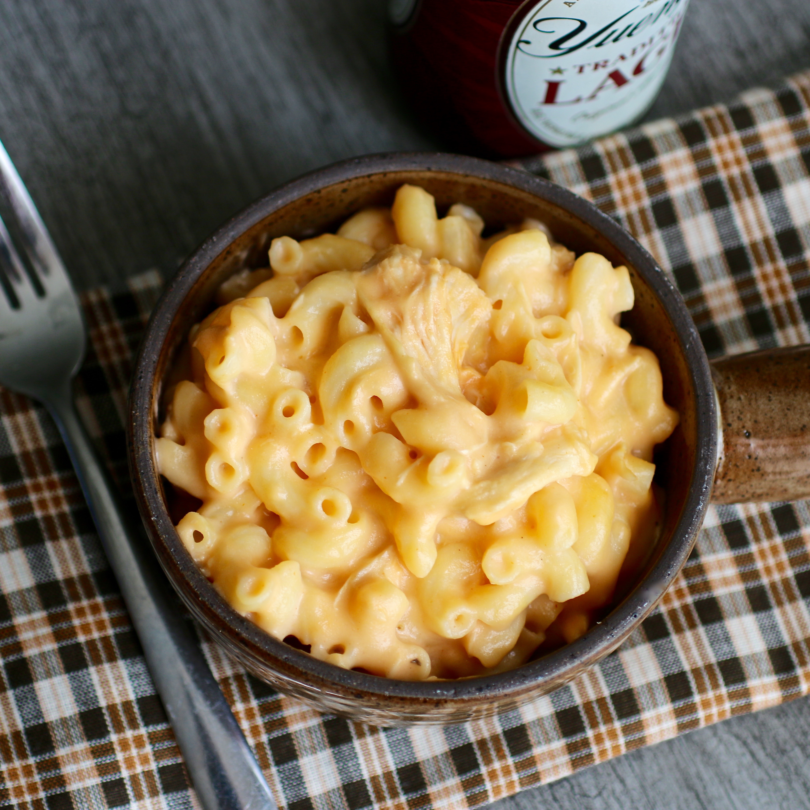

Mac and Cheese

Ingredients
- 1 (16 ounce) package elbow macaroni
- 1 rotisserie-roasted chicken
- 6 tablespoons butter
- 6 tablespoons all-purpose flour
- 3 cups milk
- 1 pinch ground black pepper
- 2 cups shredded Cheddar cheese
- 2 cups shredded Monterey Jack cheese
- 1/2 cup hot sauce, or more to taste
- 1/2 cup crumbled gorgonzola cheese
Steps
- Bring a large pot of lightly salted water to a boil. Cook macaroni in the boiling water, stirring occasionally until tender yet firm to the bite, about 8 minutes. Drain.
- Cut wings and legs off rotisserie chicken. Remove skin and bones from wings and legs; chop or shred dark meat into bite-sized pieces.
- Melt butter in a large Dutch oven over medium heat. Gradually whisk in flour until a thick paste forms. Cook until golden, about 1 minute. Pour in milk, whisking constantly, until thickened and bubbling, about 5 minutes. Continue to cook and stir until sauce is smooth, about 1 minute more. Reduce heat and season with pepper.
- Stir Cheddar and Monterey Jack into the sauce until melted and combined. Stir in hot sauce to the desired level of spiciness. Add Gorgonzola, chicken, and macaroni; mix well to combine.